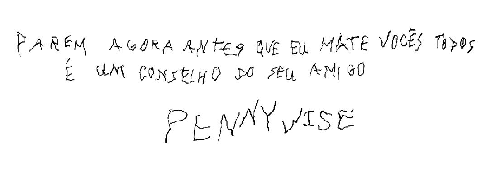

Capítulo 17
Mais um desaparecido: a morte de Patrick Hockstetter
1
Quando termina, Eddie se serve de outra bebida com a mão não muito firme. Ele olha para Beverly e diz:
— Você viu a Coisa, não viu? Você viu a Coisa pegar Patrick Hockstetter no dia seguinte ao que vocês assinaram no meu gesso.
Os outros se inclinam para a frente.
Beverly prende o cabelo em uma nuvem avermelhada. Por baixo dele, seu rosto está extraordinariamente pálido. Ela tira um cigarro do maço com mãos desajeitadas, o último, e dispara o Bic. Ela parece não conseguir guiar a chama até a ponta do cigarro. Depois de um momento, Bill segura o pulso dela com mão leve, mas firme, e coloca a chama no local onde deve ir. Beverly olha para ele com agradecimento e expira uma nuvem de fumaça azul-acinzentada.
— É — diz ela. — Eu vi acontecer.
Ela treme.
— Ele era l-l-louco — diz Bill, e pensa: Só o fato de Henry deixar um pirado como Patrick Hockstetter andar com ele conforme o verão passava… isso diz alguma coisa, não diz? Ou que Henry estava perdendo um pouco do velho charme, um pouco da atração, ou que a loucura de Henry tinha progredido tanto a ponto de o garoto Hockstetter parecer legal para ele. As duas coisas davam no mesmo: a crescente… o quê? Degeneração de Henry? É essa a palavra? Sim, considerando o que aconteceu com ele, onde ele foi parar, acho que sim.
E tem outra coisa que sustenta essa ideia, pensa Bill, mas só consegue se lembrar da ideia vagamente. Ele, Richie e Beverly estavam nos Irmãos Tracker. Era começo de agosto, e a recuperação que manteve Henry longe deles durante a maior parte do verão estava quase terminando. E Victor Criss não tinha se aproximado deles? Um Victor Criss muito assustado? Sim, isso tinha acontecido. As coisas estavam se aproximando rapidamente do fim, e Bill pensa agora que todas as crianças de Derry sentiram; os Otários e o grupo de Henry, mais do que todos. Mas isso tudo foi depois.
— Ah, é bem isso mesmo — diz Beverly sem emoção. — Patrick Hockstetter era louco. Nenhuma das garotas queria sentar na frente dele na escola. Você estava ali sentada, fazendo trabalho de aritmética ou escrevendo uma história ou redação, e de repente sentia a mão dele… quase tão leve quanto uma pena, mas quente e suada. Carnuda. — Ela engole em seco, e há um pequeno clique em sua garganta. Os outros a observam solenemente ao redor da mesa. — Você sentia na lateral do corpo, ou talvez no seio. Não que nós tivéssemos exatamente seios naquela época. Mas Patrick não parecia se importar com isso.
“Você sentia aquele… aquele toque, e pulava para longe, se virava e ali estava Patrick, sorrindo com aqueles lábios grandes e borrachudos. Ele tinha um estojo…”
— Cheio de moscas — disse Richie de repente. — Claro. Ele matava elas com a régua verde e colocava no estojo. Até lembro como era: vermelho, com uma capa branca encerada que deslizava pra abrir e fechar.
Eddie está assentindo.
— Você pulava pra longe, e ele sorria e às vezes abria o estojo pra você poder ver as moscas mortas dentro — diz Beverly. — E o pior, a coisa mais horrível, era a forma como ele sorria e nunca dizia nada. A sra. Douglas sabia. Greta Bowie dedurou ele, e acho que Sally Mueller também disse alguma coisa uma vez. Mas… acho que a sra. Douglas também tinha medo dele.
Ben está equilibrado nas pernas de trás da cadeira, com as mãos atrás da nuca. Ela ainda não consegue acreditar no quanto ele está magro.
— Tenho certeza de que você está certa — diz ele.
— O q-que a-aconteceu com e-e-ele, Beverly? — pergunta Bill.
Ela engole em seco de novo, tentando lutar contra o poder de pesadelo do que ela viu naquele dia no Barrens, com os patins amarrados um no outro e pendurados no ombro, um joelho ardendo e doendo de uma queda na via Saint Crispin, outra das ruas pequenas e arborizadas que acabavam onde o terreno despencava (e ainda despenca) diretamente no Barrens. Ela lembra (ah, essas lembranças, quando elas vêm, são tão claras e poderosas) que estava usando um short jeans curto demais, que passava pouco da barra da calcinha. Ela tinha começado a prestar mais atenção no próprio corpo no último ano… nos últimos seis meses, na verdade, quando começou a formar curvas e ficar mais feminino. O espelho era um motivo para essa percepção aumentada, é claro, mas não o principal; o principal era que o pai parecia mais rígido ultimamente, com mais tendência a usar a mão ou mesmo o punho. Ele parecia inquieto, quase enjaulado, e ela ficava cada vez mais nervosa quando estava perto dele, mais e mais atenta. Era como se houvesse um cheiro entre eles, um cheiro que não existia quando ela ficava no apartamento sozinha, um cheiro que não costumava existir quando eles estavam lá dentro juntos, ao menos não antes daquele verão. E quando a mãe saía, ficava pior. Se havia um cheiro, algum cheiro, então ele talvez também soubesse, porque Bev via cada vez menos o pai conforme o clima ficava mais quente, em parte por causa da liga de boliche do verão, em parte porque ele estava ajudando o amigo Joe Tammerly a consertar carros… mas ela desconfia que era em parte pelo cheiro, o que fluía entre eles, sem nenhum dos dois pretender, mas que fluía mesmo assim, os dois tão impotentes para impedir quanto parar de suar em julho.
A visão dos pássaros, centenas e milhares deles, descendo sobre os telhados das casas, em postes telefônicos, em antenas de TV, surge de novo.
— E hera venenosa — diz ela em voz alta.
— O q-q-quê? —pergunta Bill.
— Alguma coisa sobre hera venenosa — diz ela lentamente, olhando para ele. — Mas não era. Só parecia hera venenosa. Mike…?
— Não se preocupe — diz Mike. — Você vai lembrar. Conte o que lembra, Bev.
Me lembro do short azul, ela contaria a eles, e de como estava ficando desbotado; o quanto estava apertado nos quadris e na bunda. Eu tinha metade de um maço de Lucky Strike em um bolso e o estilingue Bullseye no outro…
— Se lembra do Bullseye? — pergunta ela a Richie, mas todos assentem.
— Bill deu pra mim — diz ela. — Eu não queria, mas… ele… — Ela sorri para Bill com um certo cansaço. — Não dava pra dizer não pro Big Bill, era isso. Então eu estava com ele, e era por isso que saí sozinha naquele dia. Pra treinar. Eu ainda não achava que teria coragem de usar quando chegasse a hora. Só que… usei naquele dia. Tive que usar. Matei um deles… uma das partes da Coisa. Foi horrível. Mesmo agora, tenho dificuldade de pensar nisso. E um dos outros me pegou. Olhem.
Ela levanta o braço e vira, para que todos possam ver uma cicatriz inchada na parte mais redonda do antebraço. Parece que um objeto circular quente do tamanho de um charuto Havana foi pressionado sobre a pele dela. É um pouco afundada, e olhar para ela provoca um tremor em Mike Hanlon. Essa é uma das partes da história da qual, como a conversa não desejada de Eddie com Keene, ele desconfia, mas nunca ouviu.
— Você estava certo sobre uma coisa, Richie — diz ela. — Aquele Bullseye era de matar. Eu tinha medo dele, mas também amava, de certa forma.
Richie ri e bate nas costas dela.
— Merda, eu sabia naquela época, garotinha boba.
— Sabia? Sério?
— É, sério — diz ele. — Era alguma coisa nos seus olhos, Bevvie.
— O que quero dizer é que parecia um brinquedo, mas era real. Dava pra abrir buraco nas coisas.
— E você abriu um buraco em uma coisa com ele naquele dia — reflete Ben.
Ela assente.
— Foi Patrick que você…
— Não, meu Deus, não! — diz Beverly. — Foi o outro… espere. — Ela apaga o cigarro, toma um gole de bebida e recupera o controle. Por fim, está controlada. Bem… não. Mas ela tem a sensação de que é o mais próximo que vai conseguir hoje. — Eu estava patinando, sabe? E caí e acabei com um arranhão. Então, decidi ir pro Barrens treinar. Fui até a sede do clube primeiro pra ver se vocês estavam lá. Não estavam. Só tinha aquele cheiro de fumaça. Vocês lembram quanto tempo aquele lugar ficou cheirando a fumaça?
Todos assentem, sorrindo.
— Nunca conseguimos acabar com o cheiro, né? — diz Ben.
— Então eu fui pro lixão — diz ela —, porque foi onde fizemos… o teste, acho que dá pra chamar assim, e eu sabia que lá tinha muita coisa em que disparar. Talvez até, sabe, ratos. — Ela faz uma pausa. Tem uma névoa fina de suor na testa dela agora. — Era em ratos que eu queria disparar — diz ela. — Alguma coisa viva. Não uma gaivota, eu sabia que não conseguiria disparar em uma gaivota, mas um rato… Eu queria ver se conseguia.
“Foi bom eu ter ido pela rua Kansas, e não pelo lado de Old Cape, porque não havia muito esconderijo ali perto da área da linha do trem. Eles teriam me visto, e só Deus sabe o que teria acontecido.”
— Quem teria t-te vi-visto?
— Eles — diz Beverly. — Henry Bowers, Victor Criss, Arroto Huggins e Patrick Hockstetter. Eles estão no lixão e…
De repente, surpreendendo a todos, ela começa a rir como uma criança, com as bochechas ficando vermelhas. Ela ri até ficar com lágrimas nos olhos.
— Que porra, Bev — diz Richie. — Conta a piada pra gente.
— Ah, foi mesmo uma piada — diz ela. — Foi uma piada, mas acho que eles podiam ter me matado se soubessem que eu vi.
— Agora eu lembro! — grita Ben, e começa a rir também. — Eu me lembro de você contar pra gente!
Rindo muito, Beverly diz:
— Eles estavam de calça abaixada, peidando.
Há um instante de silêncio surpreso, e todos começam a gargalhar. O som ecoa pela biblioteca.
Pensando em como exatamente contar para eles sobre a morte de Patrick Hockstetter, a coisa em que ela se fixa primeiro é em como chegar ao lixão da cidade pela rua Kansas pareceu entrar em um estranho cinturão de asteroides. Havia um caminho de terra (uma estrada de interior, na verdade; tinha até nome, rua Old Lynne) que seguia da rua Kansas até o lixão, a única estrada de verdade que entrava no Barrens. Os caminhões de lixo da cidade a usavam. Beverly caminhou perto da rua Old Lynne, mas não seguiu por ela, pois tinha ficado mais cautelosa, como achava que todos estavam agora, desde que o braço de Eddie foi quebrado. Principalmente quando estava sozinha.
Ela seguiu pela vegetação pesada, desviou de uma área de hera venenosa com folhas oleosas avermelhadas, sentindo o cheiro enfumaçado e podre do lixão, ouvindo as gaivotas. À esquerda, por brechas ocasionais na folhagem, ela conseguia ver a rua Old Lynne.
Os outros estão olhando para ela, esperando. Ela verifica o maço de cigarros e vê que está vazio. Sem falar nada, Richie joga um dos seus para ela.
Ela acende, olha ao redor e diz:
— Chegar ao lixão pela rua Kansas era um pouco como
2
entrar em um estranho cinturão de asteroides. O cinturão lixoide. A princípio, não havia nada além da vegetação crescendo a partir do chão esponjoso abaixo, e logo você via seu primeiro lixoide: uma lata enferrujada que já foi o recipiente de molho de macarrão Prince, talvez, ou uma garrafa de refrigerante S’OK cheia de bichos atraídos pelos restos doces e grudentos de baunilha ou ervas. Depois, havia um piscar intenso de sol em um resto de papel-alumínio preso em uma árvore. Você talvez visse uma mola de colchão (ou talvez tropeçasse nela, se não tomasse cuidado por onde andava), ou um osso que algum cachorro tinha carregado, mastigado e largado.
O lixão em si não era tão ruim. Era, na verdade, meio que interessante, pensou Beverly. O que era ruim (e meio assustador) era a forma que ele tinha de se espalhar. De criar esse cinturão de lixoide.
Ela estava chegando mais perto agora; as árvores eram maiores, quase todas abetos, e os arbustos estavam diminuindo. As gaivotas gritavam e chiavam com as vozes agudas e rabugentas, e o ar estava tomado do cheiro de queimado.
Agora, à direita de Beverly, apoiada na base de uma árvore, havia uma geladeira Amana enferrujada. Beverly olhou para ela, pensando vagamente no policial estadual que visitou a turma quando ela estava no terceiro ano. Ele contou que coisas como geladeiras jogadas fora eram perigosas; uma criança podia entrar em uma brincando de pique-esconde, por exemplo, e sufocar até a morte lá dentro. Embora por que alguém iria querer entrar em uma coisa velha assim…
Ela ouviu um grito, tão perto que a fez pular, seguido de gargalhadas. Beverly sorriu. Então eles estavam ali. Tinham saído da sede do clube por causa do fedor de fumaça e ido para lá. Talvez estivessem quebrando garrafas com pedras, talvez só catando coisas.
Ela começou a andar um pouco mais rápido, e o arranhão feio que tinha feito foi rapidamente esquecido na ansiedade de vê-los… de vê-lo, com o cabelo ruivo tão parecido com o dela, para ver se ele iria sorrir para ela daquele jeito estranhamente fofo de um lado só que era típico dele. Ela sabia que era nova demais para amar um garoto, jovem demais para qualquer coisa que não fosse umas “quedinhas”, mas amava Bill mesmo assim. E andou um pouco mais rápido, com os patins balançando no ombro, o elástico do Bullseye batendo delicadamente na nádega esquerda.
Ela quase entrou no meio deles, mas conseguiu perceber que não eram seus amigos, mas sim a gangue de Bowers.
Ela saiu do meio dos arbustos, e o lado mais íngreme do lixão ficava cerca de 70 metros à frente, uma avalanche cintilante de lixo no ângulo da cascalheira. A escavadeira de Mandy Fazio estava à esquerda. Bem mais perto, à frente dela, havia uma área de carros velhos. No final de cada mês, eles eram esmagados e levados para Portland, para um ferro-velho, mas agora havia mais de 12, apoiados em rodas sem pneus, alguns de lado, um ou dois apoiados no teto como cachorros mortos. Eles estavam arrumados em duas filas, e Beverly andou pelo corredor improvisado tomado de lixo entre eles como uma noiva punk do futuro, perguntando-se se conseguiria quebrar um para-brisa com o estilingue. Um dos bolsos do short azul estava lotado de bilhas que eram sua munição de treino.
As vozes e as risadas vinham de depois dos carros e para a esquerda, na beirada do lixão. Beverly contornou o último, um Studebaker sem toda a parte da frente. Seu oi morreu nos lábios. A mão que ela tinha levantado para acenar não exatamente desceu até a lateral do corpo; ela pareceu murchar.
O primeiro pensamento furiosamente constrangido foi: Ah, Deus, por que estão todos pelados?
Isso foi seguido pela assustadora percepção de quem eles eram. Ela ficou parada na frente do meio Studebaker, com a sombra grudada aos calcanhares dos tênis de cano baixo. Naquele momento, ela ficou completamente visível para eles; se algum dos quatro tivesse olhado do círculo onde estavam agachados, não teria como não vê-la, uma garota de altura mediana, um par de patins sobre um ombro, o joelho de uma perna comprida e cheia de energia ainda com sangue escorrendo, a boca aberta de surpresa, as bochechas vermelhas.
Antes de correr para trás do Studebaker, ela viu que eles não estavam completamente nus, afinal; todos estavam de camisa, e as calças e cuecas estavam só abaixadas até os sapatos, como se eles tivessem que Fazer o Número Dois (em seu estado de choque, a mente de Beverly automaticamente se reverteu ao eufemismo que ensinaram a ela quando pequena). No entanto, quem já tinha ouvido falar de quatro garotos indo Fazer o Número Dois ao mesmo tempo?
Quando já estava escondida de novo, seu primeiro pensamento foi de ir embora, e ir embora rápido. Seu coração estava disparado, os músculos vibravam com adrenalina. Ela olhou ao redor, viu o que não tinha se dado ao trabalho de reparar quando andou até ali, quando achou que as vozes eram de seus amigos. A fileira de carros velhos à esquerda era bem dispersa; eles não estavam grudados porta a porta como estariam em uma semana, mais ou menos, quando o esmagador chegasse para transformá-los em pedaços rudimentares de metal cintilante. Ela ficou exposta aos garotos várias vezes quando andou até onde estava agora; se recuasse, ficaria exposta de novo, e desta vez poderia ser vista.
Além do mais, ela sentia uma certa curiosidade vergonhosa: o que eles poderiam estar fazendo?
Cuidadosamente, ela espiou por trás do Studebaker.
Henry e Victor Criss estavam mais ou menos virados na direção dela. Patrick Hockstetter estava à esquerda de Henry. Arroto Huggins estava de costas para ela. Ela observou o fato de que Arroto tinha uma bunda extremamente grande, extremamente cabeluda, e risadinhas meio histéricas de repente subiram por sua garganta como a espuma em um copo de ginger ale. Ela teve que colocar as duas mãos em cima da boca e se esconder atrás do Studebaker novamente, lutando para segurar as gargalhadas.
Você tem que sair daqui, Beverly. Se eles pegarem você… ela olhou entre os carros velhos, ainda com as mãos sobre a boca. O corredor devia ter uns 3 metros de largura, estava tomado de latas, cintilando com pedacinhos de vidro Daf-T-Glas como pecinhas de quebra-cabeça e cheio de mato rasteiro. Se ela fizesse qualquer ruído, eles talvez a ouvissem… particularmente se a concentração deles na coisa estranha que estavam fazendo se perdesse. Quando ela pensou no quanto andou até aqui casualmente, seu sangue gelou. Além do mais…
Que diabos eles podem estar fazendo?
Ela espiou de novo e observou mais detalhes desta vez. Havia livros e papéis espalhados de forma descuidada ali perto, material escolar. Eles tinham acabado de chegar das aulas de recuperação então, o que a maior parte das crianças chamava de Aula de Burros ou Aula de Tapa-Buraco. E como Henry e Victor estavam virados na direção dela, ela conseguia ver as coisas deles. Foram as primeiras coisas que ela viu na vida, sem contar as imagens em um livrinho manchado que Brenda Arrowsmith mostrou a ela no ano anterior, e naquelas imagens não dava para ver muita coisa. Bev observou agora que as coisas deles eram tubinhos pendurados entre as pernas. O de Henry era pequeno e pelado, mas o de Victor era bem grande, e havia um emaranhado de pelos finos e pretos acima.
Bill tem um assim, pensou ela, e de repente seu corpo todo pareceu ficar vermelho de uma vez. O calor a percorreu em uma onda tal que a deixou tonta, fraca e quase enjoada. Naquele momento, ela se sentiu da mesma forma que Ben Hanscom no último dia de aula, ao olhar para a tornozeleira dela e observar a forma como cintilava ao sol… mas ele não sentiu o terror misturado que ela sentiu agora.
Ela olhou para trás mais uma vez. Agora, o caminho entre os carros que levava ao abrigo do Barrens parecia muito mais longo. Ela estava com medo de se mexer. Se eles soubessem que ela tinha visto as coisas deles, provavelmente a machucariam. E não só um pouco. Eles a machucariam muito.
Arroto Huggins deu um berro de repente, o que a fez pular, e Henry gritou:
— Noventa centímetros! Puta merda, Arroto! Foi de 90 centímetros! Não foi, Vic?
Vic concordou que sim, e todos urraram com gargalhadas de trolls.
Beverly deu outra olhada ao redor do Studebaker velho. Patrick Hockstetter tinha se virado e meio que levantado, de forma que a bunda estava quase na cara de Henry. Na mão de Henry havia um objeto prateado e brilhoso. Depois de um momento de observação, ela percebeu que era um isqueiro.
— Pensei que você tivesse dito que sentiu um chegando — disse Henry.
— Estou sentindo — disse Patrick. — Vou avisar na hora. Se prepara!... Se prepara, está chegando! Vai.. agora!
Henry acendeu o isqueiro. No mesmo momento, houve o inconfundível som trêmulo de um belo peido. Não havia como confundir aquele som; Beverly o tinha ouvido o bastante em casa, normalmente nas noites de sábado, depois de feijão com salsicha. O pai dela era um grande amante de feijão. Quando Patrick soltou e Henry acendeu o isqueiro, ela viu uma coisa que fez seu queixo cair. Uma chama azul e comprida pareceu sair diretamente do bumbum de Patrick. Para Bev, pareceu a chama piloto em um aquecedor a gás.
Os garotos urraram com as gargalhadas de troll, e Beverly se recolheu atrás dos carros, sufocando risadinhas loucas de novo. Ela estava rindo, mas não por estar achando graça. De alguma maneira muito estranha, era engraçado, sim, mas ela estava rindo mais porque sentiu uma repulsa profunda acompanhada de uma espécie de horror. Ela estava rindo porque não conhecia outra forma de lidar com o que tinha visto. Tinha alguma coisa a ver com ver as coisas dos garotos, mas isso não chegava nem perto de ser tudo, nem mesmo grande parte do que ela sentia. Ela sabia, afinal, que garotos tinham coisas, da mesma forma que sabia que garotas tinham coisas diferentes; isso era apenas o que poderíamos chamar de visão de confirmação. Mas o resto do que eles estavam fazendo parecia tão estranho, tão absurdo, mas ao mesmo tempo tão primitivo que ela se viu, apesar do ataque de gargalhadas, procurando o centro de si mesma com um certo desespero.
Pare, pensou ela, como se isso fosse a resposta, pare, eles vão te ouvir, então pare logo, Bevvie!
Mas era impossível. O melhor que ela conseguiu foi gargalhar sem envolver as cordas vocais, de forma que o som saiu dela em uma série de engasgos quase inaudíveis, pelas mãos por cima da boca, e as bochechas tão vermelhas quanto maçãs, os olhos transbordando de lágrimas.
— Puta merda, isso dói! — gritou Victor.
— Três metros e meio! — berrou Henry. — Juro por Deus, Vic, foram três metros e meio! Juro pelo nome da minha mãe!
— Não ligo se foram seis porras de metros, você queimou minha bunda! — gritou Victor, e houve mais gargalhadas urradas; ainda tentando rir silenciosamente por trás do abrigo do carro, Beverly pensou em um filme que tinha visto na TV. Jon Hall trabalhava nele. Era sobre uma tribo na selva que tinha um ritual secreto, e se você visse, era sacrificado para o deus deles, que era um grande ídolo de pedra. Isso não fez os risinhos dela pararem, e sim os incendiou a um tom quase febril. Eles estavam ficando mais e mais como gritos silenciosos. A barriga dela estava doendo. Lágrimas escorreram pelo rosto.
3
Henry, Victor, Arroto e Patrick Hockstetter acabaram no lixão acendendo os peidos uns dos outros naquela tarde quente de julho por causa de Rena Davenport.
Henry sabia o que resultava de consumir grandes quantidades de feijão. O resultado talvez fosse melhor expressado em uma rima que ele aprendeu no colo do pai quando ainda era bem pequeno: Feijão, feijão, quero mais um! Quanto mais eu como, mais solto pum! Quando solto pum, não me sinto mais fraco! E logo quero mais um prato!
Rena Davenport e o pai dele se cortejavam havia quase oito anos. Ela era gorda, tinha 40 anos e estava quase sempre imunda. Henry achava que Rena e o pai às vezes trepavam, embora não conseguisse imaginar ninguém esmagando Rena Davenport com o corpo.
O feijão de Rena era seu orgulho. Ela deixava de molho no sábado à noite e cozinhava em fogo baixo durante todo o domingo. Henry achava o feijão dela gostoso, ao menos era uma coisa para enfiar na boca e mastigar, mas depois de oito anos, qualquer coisa perdia o encanto.
E Rena não ficava satisfeita em fazer só um pouco de feijão; ela cozinhava em grande quantidade. Quando chegava no domingo à noite no velho De Soto verde (havia uma boneca de borracha nua pendurada no retrovisor, parecendo a menor vítima de linchamento do mundo), ela costumava estar com o feijão dos Bowers fervendo no assento ao lado, em um panelão de aço galvanizado. Os três comiam feijão naquela noite (Rena falando sobre a maravilha de sua comida o tempo todo, o louco do Butch Bowers resmungando e pegando caldo de feijão com um pedaço de pão ou simplesmente mandando-a calar a boca se houvesse jogo no rádio, Henry só comendo e olhando pela janela, pensando — foi sobre um prato de feijão de domingo à noite que ele teve a ideia de envenenar o cachorro de Mike Hanlon, Mr. Chips), e Butch requentava outra panelada na noite seguinte. Às terças e quartas, Henry levava um pote cheio de feijão para a escola. Na quinta e sexta, nem Henry nem o pai conseguiam mais comer. Os dois quartos da casa estariam com cheiro de peido sufocado apesar das janelas abertas. Butch pegava os restos, misturava com outras gororobas e dava para Bip e Bop, os dois porcos dos Bowers. Rena aparecia de novo com outro panelão de feijão no domingo seguinte, e o ciclo recomeçaria tudo de novo.
Naquela manhã, Henry tinha colocado no pote uma enorme quantidade de sobras de feijão, e os quatro comeram tudo ao meio-dia, sentados no parquinho, à sombra do grande olmo. Eles comeram até estarem quase estourando.
Foi Patrick quem sugeriu que eles fossem para o lixão, que estaria bem tranquilo no meio de uma tarde de verão em dia de semana. Quando eles chegaram, o feijão já estava agindo com todo o gás.
4
Pouco a pouco, Beverly se controlou novamente. Ela sabia que tinha que sair dali; bater em retirada era menos perigoso do que ficar por perto. Eles estavam absortos no que estavam fazendo, e mesmo se acontecesse o pior, ela conseguiria uma vantagem (e, no fundo da mente, também tinha decidido que, se o pior acontecesse, alguns disparos com o estilingue poderiam desencorajá-los).
Ela estava prestes a começar a se afastar quando Victor disse:
— Tenho que ir, Henry. Meu pai quer que eu ajude a colher milho hoje à tarde.
— Ah, merda — disse Henry. — Ele vai sobreviver.
— Não, ele está zangado comigo. Por causa do que aconteceu no outro dia.
— Foda-se ele se não aguenta uma piada.
Beverly prestou mais atenção agora, desconfiando que poderia ser sobre a briga que acabou com o braço de Eddie quebrado que eles estavam falando.
— Não, eu tenho que ir.
— Acho que a bunda dele está doendo — disse Patrick.
— Olha o que fala, cara de cu — disse Victor. — Pode acabar dando merda pra você.
— Eu também tenho que ir — disse Arroto.
— Seu pai quer que você colha milho? — perguntou Henry com raiva. Isso talvez fosse o que Henry considerasse uma piada; o pai de Arroto estava morto.
— Não. Mas arrumei um emprego pra entregar o Weekly Shopper. Tenho que fazer isso hoje à noite.
— Que merda é essa de Weekly Shopper? — perguntou Henry, agora parecendo aborrecido, além de zangado.
— É um emprego — disse Arroto com paciência ponderada. — Pra ganhar dinheiro.
Henry fez um som de nojo, e Beverly arriscou outra olhada por cima do carro. Victor e Arroto estavam de pé, fechando os cintos. Henry e Patrick ainda estavam agachados, de calça arriada. O isqueiro brilhava na mão de Henry.
— Você não vai pular fora, né? — perguntou Henry a Patrick.
— Não — disse Patrick.
— Você não precisa colher milho nem fazer um trabalho de veadinho?
— Não — disse Patrick de novo.
— Bem — disse Arroto com hesitação —, te vejo por aí, Henry.
— Claro — disse Henry, e cuspiu perto de um dos sapatos de Arroto.
Vic e Arroto saíram andando juntos na direção das duas fileiras de carros velhos… na direção do Studebaker atrás do qual Beverly estava agachada. A princípio, ela só conseguiu fazer uma careta, paralisada de medo como um coelho. Em seguida, contornou o lado esquerdo do Studebaker e recuou pelo espaço entre ele e o Ford maltratado e sem porta ao lado. Por um momento, ela fez uma pausa, olhando de um lado para o outro, ouvindo-os se aproximarem. Ela hesitou, com a boca seca como se cheia de algodão, com as costas coçando de suor; parte da mente dela estava se perguntando de forma entorpecida como ela ficaria com um gesso igual ao de Eddie, com os nomes dos Otários assinados. Em seguida, entrou pela porta do passageiro do Ford. Ela se encolheu no tapete imundo, deixando-se do menor tamanho possível. Estava fervendo dentro do Ford, e o cheiro de poeira, assentos podres e merda de rato velho era tão forte que ela teve que lutar para não espirrar e tossir. Ela ouviu Arroto e Victor passarem ali perto, falando em voz baixa. Logo, eles sumiram.
Ela espirrou três vezes, rápida e silenciosamente, nas mãos fechadas.
Ela achava que poderia ir embora agora se tomasse cuidado. A melhor maneira seria passar para o lado do motorista do Ford, se esgueirar pelo corredor e desaparecer. Ela acreditava que era capaz, mas o choque de quase ser descoberta tirou a coragem dela, ao menos naquele momento. Ela se sentia mais segura no Ford. E talvez, agora que Victor e Arroto tinham ido embora, os outros dois também fossem em breve. E então, ela poderia ir para a sede do clube. Tinha perdido todo o interesse em treinar a mira.
Além do mais, precisava mijar.
Anda logo, pensou ela. Anda logo, vão embora, vão logo, por fa-VOOOR!
Um momento depois, ela ouviu Patrick urrar com uma mistura de gargalhada e dor.
— Um metro e oitenta! — berrou Henry. — Igual um lança-chamas do caralho! Juro por Deus!
Silêncio por alguns momentos. Suor escorrendo pelas costas dela. O sol batendo no para-brisa rachado do Ford e na nuca dela. Peso na bexiga.
Henry berrou tão alto que Beverly, que estava quase cochilando apesar do desconforto, quase deu um grito.
— Droga, Hockstetter! Você queimou minha bunda! O que você está fazendo com esse isqueiro?
— Três metros — riu Patrick (o simples som fez Beverly se sentir gelada e repugnada, como se tivesse visto uma minhoca se contorcer na salada). — Três metros ou até mais, Henry. Bem azul. Três metros. Juro por Deus!
— Me dá isso — resmungou Henry.
Andem logo, seus idiotas, vão embora!
Quando Patrick falou de novo, a voz dele estava tão baixa que Bev mal conseguiu ouvir. Se houvesse um sopro de vento no ar naquela tarde quente, ela não teria conseguido.
— Quero te mostrar uma coisa — disse Patrick.
— O quê? — perguntou Henry.
— Só uma coisa. — Patrick fez uma pausa. — É gostoso.
— O quê? — perguntou Henry de novo.
Em seguida, silêncio.
Não quero olhar, não quero ver o que eles estão fazendo agora, e, além do mais, eles podem me ver, na verdade, provavelmente vão ver, porque você usou toda sua sorte de hoje, garotinha. Então fique bem aqui. Nada de espiar…
Mas a curiosidade superou o bom senso. Havia alguma coisa estranha naquele silêncio, alguma coisa um pouco assustadora. Ela levantou a cabeça centímetro a centímetro até conseguir olhar pelo para-brisa rachado e sujo do Ford. Ela não precisava ter medo de ser vista; os dois garotos estavam concentrados no que Patrick estava fazendo. Ela não entendeu o que estava vendo, mas sabia que era nojento… não que ela esperasse qualquer outra coisa de Patrick, que era tão estranho.
Ele estava com a mão entre as coxas de Henry e a outra entre as próprias coxas. Uma das mãos massageava a coisa de Henry delicadamente; com a outra, Patrick massageava a sua. Só que ele não estava exatamente massageando. Ele estava meio que… espremendo, puxando, deixando cair solto de novo.
O que ele está fazendo?, perguntou-se Beverly consternada.
Ela não sabia, não tinha certeza, mas ficou com medo. Achava que não ficava com tanto medo desde que o ralo do banheiro vomitou sangue e manchou tudo. Uma parte profunda dela gritava que, se eles descobrissem que ela tinha visto isso, fosse o que fosse, poderiam fazer mais do que machucá-la; poderiam realmente chegar a matá-la.
Ainda assim, ela não conseguia afastar o olhar.
Ela viu que a coisa de Patrick tinha ficado um pouco mais comprida, mas não muito; ainda ficava pendurada entre as pernas dele como uma cobra sem espinha dorsal. A de Henry, no entanto, tinha crescido de uma maneira absurda. Estava de pé, rígida e dura, quase cutucando seu umbigo. A mão de Patrick subia e descia, subia e descia, às vezes parava para apertar, às vezes apertava aquele saco estranho e pesado debaixo da coisa de Henry.
São as bolas dele, pensou Beverly. Os garotos têm que andar por aí com isso o tempo todo? Meu Deus, eu ficaria louca! Outra parte da mente dela sussurrou: Bill tem isso. Por conta própria, sua mente visualizou-a segurando-as, aninhando na mão, verificando a textura… e aquele sentimento quente percorreu o corpo dela de novo, despertando um rubor furioso.
Henry olhava para a mão de Patrick como se hipnotizado. O isqueiro estava no terreno pedregoso ao lado, refletindo o sol quente da tarde.
— Quer que eu coloque na boca? — perguntou Patrick. Os lábios grandes e escuros deram um sorriso complacente.
— Hã? — perguntou Henry, como se despertado de um sonho profundo.
— Posso colocar na boca se você quiser. Não me… — A mão de Henry voou, meio dobrada, não exatamente formando um punho. Patrick caiu esparramado. Sua cabeça bateu no cascalho. Beverly se escondeu de novo, com o coração disparado no peito, os dentes travados para impedir um choramingo. Depois de derrubar Patrick, Henry se virou e, por um momento, pouco antes de ela se encolher no lado do passageiro, pareceu que os olhos de Henry grudaram nos dela.
Por favor Deus o sol estava nos olhos dele, rezou ela. Por favor Deus me desculpe por espiar. Por favor Deus.
Houve uma pausa agonizante. A blusa branca estava grudada no corpo de suor. Gotas como pérolas pequenas brilhavam nos braços bronzeados. A bexiga latejava dolorosamente. Ela sentiu que em pouco tempo molharia a calça. Esperou que o rosto furioso de Henry surgisse na abertura onde antes ficava a porta do passageiro do Ford, é claro que aconteceria… Como ele poderia não tê-la visto? Ele a arrastaria para fora e a machucaria. Ele…
Um pensamento novo e ainda mais terrível surgiu na mente dela, e mais uma vez ela precisou se esforçar de forma dolorosa para não molhar a calça. E se ele fizesse alguma coisa com ela com a coisa dele? E se ele quisesse enfiar em alguma parte dela? Ela sabia qual era o lugar onde entrava, claro; parecia que o conhecimento chegou à mente dela com toda força. Ela pensou que, se Henry tentasse colocar a coisa dele nela, ela ficaria louca.
Por favor, não, por favor, Deus, não deixe que ele tenha me visto, por favor, tá?
E então, Henry falou, e para seu horror crescente, a voz estava vindo de algum lugar bem mais perto.
— Não gosto dessas coisas de veado.
De mais longe, a voz de Patrick:
— Você estava gostando.
— Eu não estava gostando! — gritou Henry. — E se você contar pra alguém que eu estava, vou te matar, seu veadinho de merda!
— Você ficou duro — disse Patrick. Ele parecia estar sorrindo. Por mais que ela sentisse medo de Henry Bowers, o sorriso não teria surpreendido Beverly. Patrick era louco, mais louco do que Henry, talvez, e pessoas tão loucas não tinham medo de nada. — Eu vi.
Passos esmagaram o cascalho, cada vez mais perto. Beverly ergueu o rosto com olhos arregalados. Pelo para-brisa velho do Ford, ela agora conseguia ver a parte de trás da cabeça de Henry. Ele estava olhando para Patrick, mas se se virasse…
— Se você contar pra alguém, vou dizer que você chupa pau — disse Henry. — Depois, vou te matar.
— Você não me assusta, Henry — disse Patrick, e riu. — Mas pode ser que eu não conte se você me der um dólar.
Henry se mexeu com desconforto. Ele se virou um pouco; Beverly agora conseguia ver um quarto do perfil dele em vez de só a parte de trás da cabeça. Por favor, Deus, por favor, Deus, implorou ela com incoerência, e a bexiga latejou com mais força.
— Se você contar — disse Henry, com voz baixa e calculada —, vou contar o que você anda fazendo com os gatos. Com os cachorros também. Vou contar sobre sua geladeira. Sabe o que vai acontecer, Hockstetter? Vão pegar você e levar pra porra do hospício.
Silêncio de Patrick.
Henry bateu com os dedos no capô do Ford em que Beverly estava escondida.
— Entendeu?
— Entendi. — Patrick pareceu aborrecido agora. Aborrecido e com um pouco de medo. Ele disse de repente: — Você gostou! Ficou duro! Foi o maior pau duro que eu já vi!
— É, aposto que você já viu muitos, seu veado homo de merda. Mas lembra o que falei sobre a geladeira. Sua geladeira. E se eu te encontrar por aí, vou te cobrir de porrada.
Mais silêncio de Patrick.
Henry se afastou. Beverly virou a cabeça e viu-o passar pelo lado do motorista do Ford. Se ele tivesse olhado um pouquinho para a esquerda, a teria visto. Mas não olhou. Um momento depois, ela o ouviu seguindo pelo mesmo caminho de Victor e Arroto.
Agora, só havia Patrick.
Beverly esperou, mas nada aconteceu. Cinco minutos se arrastaram. A necessidade dela de urinar agora estava desesperadora. Ela talvez conseguisse segurar por mais dois ou três minutos, mas não mais. E estava inquieta por não saber onde Patrick estava.
Ela espiou pelo para-brisa de novo e o viu sentado ali. Henry tinha esquecido o isqueiro. Patrick tinha colocado os livros em uma bolsa pequena de lona e pendurado no pescoço, como a de um entregador de jornal, mas a calça e a cueca ainda estavam abaixadas até os tornozelos. Ele estava brincando com o isqueiro. Girava a roldana, produzia uma chama que era quase invisível no dia claro, fechava o isqueiro e começava tudo de novo. Parecia hipnotizado. Uma linha de sangue escorria do canto da boca até o queixo, e os lábios estavam inchando do lado direito. Ele pareceu não ter reparado, e mais uma vez Beverly sentiu uma espécie de repulsa. Patrick era louco mesmo; ela nunca na vida quis tanto se afastar de alguém.
Movendo-se com cautela, ela passou pela parte central do Ford, onde fica o câmbio, e se espremeu embaixo do volante. Colocou os pés no chão e foi para trás do carro. Depois, correu rapidamente pelo mesmo caminho que tinha vindo. Quando entrou no meio dos pinheiros atrás dos carros velhos, ela olhou para trás por cima do ombro. Não tinha ninguém ali. O lixão estava parado sob o sol. Ela sentiu a pressão ao redor do peito e do estômago se afrouxar de alívio, e só sobrou a vontade de urinar, tão grande que ela estava quase passando mal.
Ela percorreu uma parte do caminho e entrou à direita. Abriu o short quase antes de a vegetação ter se fechado atrás dela novamente. Ela deu uma olhadinha rápida ao redor para ter certeza de que não havia hera venenosa por perto; em seguida, se agachou, segurando-se no tronco grosso de um arbusto para se equilibrar.
Ela estava vestindo o short quando ouviu passos se aproximando do lixão. Tudo que conseguiu ver em meio aos arbustos foi jeans azul e o xadrez desbotado de uma camisa de escola. Era Patrick. Ela se abaixou e ficou esperando que ele seguisse na direção da rua Kansas. Estava mais otimista quanto ao esconderijo agora. O local era bom, ela não precisava mais urinar, e Patrick estava perdido em seu mundo da lua. Quando ele fosse embora, ela daria meia-volta e seguiria para a sede do clube.
Mas Patrick não passou. Ele parou no caminho quase em frente a ela e ficou olhando para a geladeira Amana enferrujada.
Beverly conseguiu observar Patrick por entre os arbustos sem chance de ser vista. Agora que estava aliviada da pressão na bexiga, viu-se curiosa de novo. E se Patrick por acaso a visse, ela tinha certeza de que conseguiria correr mais rápido do que ele. Ele não era tão gordo quanto Ben, mas era gorducho. Mas tirou o estilingue do bolso e colocou meia dúzia de bilhas de aço no bolso do peito da blusa velha Ship ‘n Shore. Louco ou não, um bom disparo no joelho poderia desencorajar rapidamente sujeitos como Patrick Hockstetter.
Ela se lembrava bem da geladeira agora. Havia muitas geladeiras no lixão, mas de repente ocorreu a ela que essa era a única que ela tinha visto que Mandy Fazio não tinha alterado arrancando o mecanismo de tranca com um alicate ou simplesmente removendo a porta.
Patrick começou a cantarolar e se balançar na frente da geladeira velha e enferrujada, e Beverly sentiu um tremor novo percorrer seu corpo. Ele era como um cara em um filme de terror tentando despertar um cadáver em uma cripta.
O que ele quer fazer?
Mas se ela soubesse o que ele queria fazer ou se soubesse o que aconteceria quando Patrick finalmente terminasse seu ritual particular e abrisse a porta enferrujada da Amana, ela teria fugido o mais rápido possível.
5
Ninguém, nem mesmo Mike Hanlon, tinha a menor ideia do quanto Patrick Hockstetter era realmente louco. Ele tinha 12 anos, era filho de um vendedor de tintas. A mãe era católica devota e morreria de câncer de mama em 1962, quatro anos depois que Patrick foi consumido pela entidade das trevas que existia em e abaixo de Derry. Apesar de seu QI ser declarado de baixo a normal em um teste, Patrick já tinha repetido duas vezes, o primeiro e o terceiro ano. Ele estava fazendo aula de recuperação para não precisar repetir o quinto também. Os professores o achavam um aluno apático (vários deles anotaram isso nas seis linhas dos boletins da Escola Derry reservadas para os COMENTÁRIOS DOS PROFESSORES) e também bastante perturbador (mas isso ninguém anotou; os sentimentos eram vagos demais, difusos demais, para serem expressos em sessenta linhas, quanto mais em seis). Se ele tivesse nascido dez anos depois, um orientador talvez o tivesse direcionado para um psicólogo infantil, que poderia (ou não; Patrick era bem mais inteligente do que os testes medíocres de QI indicavam) ter percebido as profundezas apavorantes por trás daquele rosto redondo flácido e pálido.
Ele era um sociopata, e talvez naquele julho quente de 1958 tivesse se tornado um verdadeiro psicopata. Ele não conseguia se lembrar de uma época em que acreditava que as outras pessoas (qualquer criatura viva, na verdade) eram “reais”. Ele acreditava que era uma criatura de verdade, provavelmente a única no universo, mas não estava nada convencido de que isso o tornava “real”. Ele não tinha noção de machucar nem de ser machucado (sua indiferença ao levar um tapa na boca de Henry no lixão era uma prova). Mas, apesar de achar a realidade um conceito completamente sem sentido, ele entendia perfeitamente o conceito de “regras”. E apesar de todos os professores o acharem estranho (tanto a sra. Douglas, a professora do quinto ano, quanto a sra. Weems, que deu aula para Patrick no terceiro ano, sabiam sobre o estojo cheio de moscas, e embora nenhuma das duas ignorasse completamente as implicações, cada uma tinha entre vinte e 28 outros alunos, cada um com seus próprios problemas), nenhum tinha problemas disciplinares sérios com ele. Ele podia entregar provas completamente em branco, ou em branco exceto por um grande ponto de interrogação decorado, e a sra. Douglas descobriu que era melhor deixá-lo longe das garotas por causa das mãos inquietas e dedos safados, mas ele era calmo, tão calmo que havia vezes em que poderia ser encarado como um monte de argila modelado para se parecer com um garoto. Era fácil ignorar Patrick, que repetia de ano em silêncio, quando você tinha que lidar com garotos como Henry Bowers e Victor Criss, que eram ativamente os agitadores e insolentes, garotos que roubavam o dinheiro do lanche e destruíam com alegria propriedade da escola se tivessem oportunidade, e garotas como a tragicamente batizada de Elizabeth Taylor, que era epilética e cujos poucos neurônios funcionavam esporadicamente, e que tinha que ser desencorajada a levantar o vestido no parquinho para mostrar a calcinha nova. Em outras palavras, a Escola Derry era o típico carnaval educacional confuso, um circo com tantos picadeiros que o próprio Pennywise talvez passasse despercebido. Certamente, nenhum dos professores de Patrick (nem os pais, aliás) desconfiava que ele, quando tinha 5 anos, assassinou o irmãozinho ainda bebê, Avery.
Patrick não gostou quando a mãe chegou com Avery do hospital. Ele não ligava (ao menos, foi o que disse para si mesmo) se os pais tinham dois, cinco ou cinquenta filhos, desde que a criança ou crianças não alterassem a agenda dele. Mas descobriu que Avery afetava. As refeições saíam tarde. O bebê chorava à noite e o acordava. Parecia que os pais estavam sempre em volta do berço dele e, quando ele tentava chamar a atenção dos dois, descobriu que não conseguia. Em uma das poucas vezes de sua vida, Patrick sentiu medo. Ocorreu a ele que se os pais o tinham trazido para casa do hospital, e se ele era “real”, então talvez Avery também fosse “real”. Poderia até acontecer que, quando Avery ficasse grande o bastante para andar e falar, para pegar o exemplar do pai do Derry News na varanda e entregar as fôrmas para a mãe quando ela fazia pão, eles acabassem decidindo se livrar completamente de Patrick. Não era que ele tivesse medo de os pais amarem mais Avery (embora estivesse óbvio para Patrick que eles amavam mais o bebê, e nesse caso sua avaliação provavelmente estava correta). O que importava para ele era: 1. as regras que estavam sendo quebradas ou mudaram desde que Avery chegou; 2. a possível realidade de Avery; e 3. a possibilidade de se livrarem dele em favor de Avery.
Patrick entrou no quarto de Avery uma tarde por volta das 14h30, pouco depois de o ônibus escolar deixá-lo em casa após a aula do jardim de infância. Foi em janeiro. Do lado de fora, a neve estava começando a cair. Um vento poderoso soprava pelo Parque McCarron e fazia as janelas do andar de cima tremerem. A mãe estava cochilando no quarto; Avery tivera várias noites agitadas. O pai estava trabalhando. Avery estava dormindo de bruços, com a cabeça virada para o lado.
Patrick, com o rosto redondo sem expressão, virou a cabeça de Avery de forma a ficar diretamente apontada para o travesseiro. Avery fungou e virou a cabeça de novo para o lado. Patrick observou isso e ficou pensando um pouco enquanto a neve derretia das botas amarelas e fazia uma poça no chão. Talvez cinco minutos tenham se passado (pensar rápido não era especialidade de Patrick), e então ele virou o rosto de Avery para o travesseiro de novo e ficou segurando por um momento. Avery se mexeu sob a mão dele e lutou. Mas os esforços foram fracos. Patrick soltou. Avery virou a cabeça para o lado de novo, deu um chorinho engasgado e voltou a dormir. O vento soprou e balançou as janelas. Patrick esperou para ver se o chorinho acordaria a mãe. Não acordou.
Agora, ele se sentia tomado de grande empolgação. O mundo parecia saltar claramente na frente dele pela primeira vez. Seu equipamento emocional tinha defeitos graves e, naqueles poucos momentos, ele se sentiu como uma pessoa totalmente daltônica devia se sentir se recebesse uma injeção que permitisse que ela visse as cores pela primeira vez… ou como um drogado se sente quando a droga faz seu cérebro entrar em órbita. Era uma coisa nova. Ele não desconfiava que existia.
Delicadamente, ele virou o rosto de Avery para o travesseiro de novo. Desta vez, quando Avery lutou, Patrick não soltou. Ele apertou o rosto do bebê com mais firmeza no travesseiro. O bebê estava chorando com voz abafada agora, e Patrick sabia que estava acordado. Ele tinha a vaga ideia de que a mãe acabaria descobrindo se parasse. Ele ficou segurando. O bebê lutou. Patrick ficou segurando. O bebê peidou. A luta ficou mais fraca. Patrick continuou segurando. O bebê acabou ficando completamente parado. Patrick o segurou por mais cinco minutos, sentindo aquela empolgação chegar a um pico e começar a sumir: a dose acabando, o mundo ficando cinza de novo, a droga virando o estado habitual de torpor.
Patrick desceu a escada, pegou um prato de biscoitos e se serviu de um copo de leite. A mãe desceu meia hora depois e disse que nem o ouviu chegar de tanto que estava cansada (não vai ficar mais, mãe, pensou Patrick, não se preocupe, eu resolvi). Ela se sentou com ele, comeu um biscoito e perguntou como foi a escola. Patrick disse que foi tudo bem e mostrou o desenho que tinha feito de uma árvore e uma casa. O papel estava coberto de rabiscos redondos sem sentido feitos com lápis de cera preto e marrom. A mãe disse que estava muito bonito. Patrick levava para casa os mesmos rabiscos pretos e marrons todos os dias. Às vezes, ele dizia que era um peru, às vezes, uma árvore de Natal, às vezes, um garoto. A mãe sempre dizia que estava bonito… mas, às vezes, em uma parte tão profunda dela que ela nem sabia que existia, ficava preocupada. Havia alguma coisa perturbadora na mesmice escura daqueles rabiscos arredondados e grandes em preto e marrom.
Ela só descobriu a morte de Avery às 17h; até aquele momento, simplesmente supôs que ele estava tirando uma soneca muito longa. Patrick estava assistindo Crusader Rabbit na televisão de sete polegadas, e continuou assistindo durante toda a confusão que aconteceu em seguida. Estava passando Whirlybirds quando a sra. Henley chegou da casa ao lado (sua mãe estava gritando e segurando o cadáver do bebê na porta aberta da cozinha, acreditando de alguma maneira cega que o ar frio talvez o reavivasse; Patrick estava com frio e pegou um suéter no armário do andar de baixo). Highway Patrol, o programa favorito de Ben Hanscom, estava passando quando o sr. Hockstetter chegou do trabalho. Quando o médico chegou, Science Fiction Theater, com Seu Anfitrião Truman Bradley, estava começando. “Quem sabe que coisas estranhas o universo pode conter?”, especulou Truman Bradley enquanto a mãe de Patrick berrava e lutava contra os braços do marido na cozinha. O médico observou a calma profunda de Patrick e o olhar sério e supôs que o garoto estivesse em estado de choque. Ele queria que Patrick tomasse um comprimido. Patrick não se importou.
Foi diagnosticado como morte súbita. Anos depois, talvez houvesse questionamento sobre uma fatalidade daquelas, talvez desvios da habitual síndrome de morte súbita infantil fossem observados. Mas, quando aconteceu, a morte foi simplesmente registrada e o bebê foi enterrado. Patrick ficou grato porque depois que tudo foi resolvido, suas refeições começaram a chegar na hora de novo.
Na loucura daquela tarde e daquela noite (pessoas entrando e saindo da casa, as luzes vermelhas da ambulância do Derry Home Hospital pulsando nas paredes, a sra. Hockstetter gritando, chorando e se recusando a ser consolada), só o pai de Patrick chegou perto da verdade. Ele estava entorpecido ao lado do berço vazio de Avery cerca de vinte minutos depois que o corpo foi removido, estava simplesmente ali de pé, incapaz de acreditar que aquilo tinha acontecido. Ele olhou para baixo e viu duas marcas no chão de madeira. Tinham sido feitas pela neve derretendo das botas amarelas de borracha de Patrick. Ele olhou para elas e um pensamento horrível surgiu brevemente em sua mente, como gás tóxico de uma mina profunda. Sua mão foi lentamente até a boca e seus olhos se arregalaram. Uma imagem começou a se formar em sua mente. Antes que pudesse ficar clara, ele saiu do quarto e bateu a porta com tanta força que a moldura de cima quebrou.
Ele nunca fez perguntas a Patrick.
Patrick nunca fez nada parecido novamente, embora talvez tivesse feito se uma chance houvesse surgido. Ele não sentia culpa, não tinha pesadelos. Mas, conforme o tempo passou, ele ficou ciente do que teria acontecido com ele se tivesse sido descoberto. Havia regras. Coisas desagradáveis aconteciam se você não as seguisse… ou se fosse pego violando-as. Você podia ser preso ou colocado na cadeira de eletrocussão.
Mas aquele sentimento de empolgação relembrada, aquele sentimento de cor e sensações, era simplesmente forte demais e maravilhoso demais para abrir mão completamente. Patrick matava moscas. No começo, só matava com o mata-moscas da mãe; mais tarde, descobriu que podia matar com eficiência usando uma régua de plástico. Ele também descobriu a alegria dos papéis mata-moscas. Um pedaço comprido e grudento podia ser comprado por dois centavos no mercado da avenida Costello, e Patrick às vezes ficava na garagem por até duas horas, vendo moscas pousarem e lutarem para se libertar, com a boca entreaberta, os olhos enevoados iluminados com aquela empolgação rara, suor escorrendo pelo rosto redondo e pelo corpo largo. Patrick matava besouros, mas se possível capturava-os primeiro. Às vezes, ele roubava uma agulha comprida da caixa de costuras da mãe, empalava um besouro japonês com ela e se sentava de pernas cruzadas no jardim para vê-lo morrer. A expressão dele nessas horas era a de um garoto que estava lendo um livro muito bom. Uma vez, ele descobriu um gato atropelado que estava morrendo na vala da rua Lower Main e ficou observando até uma velha vê-lo empurrando a coisa esmagada e chorosa com o pé. Ela bateu nele com a vassoura que estava usando para varrer a calçada. Vá pra casa!, gritou ela para ele. Você é o quê, louco? Patrick foi para casa. Não ficou com raiva da mulher. Ele tinha sido visto violando as regras, só isso.
No ano anterior (não teria surpreendido Mike Hanlon e nenhum dos amigos dele àquela altura saber que foi, na verdade, no mesmo dia em que George Denbrough foi assassinado), Patrick descobriu a geladeira Amana enferrujada, um dos maiores lixoides no cinturão que cercava o próprio lixão.
Como Bev, ele tinha ouvido avisos sobre aparelhos abandonados como aquele, informando que 30 milhões de crianças morriam sufocadas dentro de objetos assim todos os anos. Patrick ficou olhando para a geladeira por um longo tempo, coçando o saco com as mãos enfiadas nos bolsos. Aquela empolgação tinha voltado, mais forte do que nunca, exceto pela vez que ele deu um jeito em Avery. A empolgação tinha voltado porque, nos cafundós apavorantes e espumantes do cérebro, Patrick Hockstetter tinha tido uma ideia.
Os Luce, que moravam três casas depois dos Hockstetter, deram falta do gato, Bobby, uma semana depois. Os filhos dos Luce, que não conseguiam se lembrar da época em que Bobby não existia, passaram horas caminhando pelo bairro em busca dele. Até juntaram dinheiro e colocaram um anúncio na coluna de Achados e Perdidos do Derry News. Não deu em nada. E se algum deles viu Patrick naquele dia, mais parrudo do que nunca com a parca de inverno com cheiro de naftalina (depois que a enchente baixou naquele outono de 1957, ficou muito frio quase imediatamente), carregando uma caixa de papelão, eles não acharam nada de mais.
Os Engstrom, que moravam no outro quarteirão, quase diretamente atrás da casa dos Hockstetter, perderam o filhote de cocker uns dez dias antes do Dia de Ação de Graças. Outras famílias perderam cachorros e gatos nos seis ou oito meses seguintes, e Patrick pegou todos, é claro, sem mencionar mais de dez cachorros de rua na área do Meio Acre do Inferno de Derry.
Ele os colocou dentro da Amana enferrujada perto do lixão, um a um. Cada vez que levava outro animal, com o coração disparado no peito, os olhos quentes e lacrimejantes de empolgação, ele esperava descobrir que Mandy Fazio tinha arrancado a tranca da geladeira ou as dobradiças com a marreta. Mas Mandy nunca tocou naquela geladeira em particular. Talvez não se desse conta de que ela estava lá, talvez a força da vontade de Patrick o mantivesse longe… ou talvez alguma outra força estivesse fazendo isso.
O cocker dos Engstrom foi o que durou mais. Apesar do frio incomum, ele ainda estava vivo quando Patrick voltou pela terceira vez em três dias, embora tivesse perdido toda a energia (ele estava balançando o rabo e lambendo as mãos dele freneticamente quando Patrick o tirou da caixa e colocou na geladeira). Quando voltou um dia depois, o cachorrinho quase conseguiu fugir. Patrick teve que correr atrás dele até quase o lixão, quando conseguiu pular e segurar uma perna traseira. O cachorrinho mordeu Patrick com dentinhos afiados. Patrick não se importou. Apesar das mordidas, ele levou o cocker de volta até a geladeira e colocou lá dentro. Ele estava com uma ereção nesse momento. Isso não era incomum.
No segundo dia, o cachorro tentou sair de novo, mas se deslocou devagar demais. Patrick o enfiou lá dentro de volta, fechou a porta enferrujada da geladeira e se apoiou nela. Ele conseguia ouvir o cachorrinho arranhando a porta. Conseguia ouvir o choramingo abafado.
— Bom cachorro — disse Patrick Hockstetter. Seus olhos estavam fechados e ele estava respirando rápido. — Você é um bom cachorro.
No terceiro dia, o cachorro só conseguiu revirar os olhos na direção do rosto de Patrick quando a porta se abriu. As laterais do corpo estavam subindo e descendo rapidamente. Quando Patrick voltou no dia seguinte, o cachorro estava morto com uma camada de espuma seca na boca e no focinho. Isso fez Patrick pensar em picolé de coco, e ele gargalhou enquanto tirava o cadáver da caixa de matar e jogava no mato.
O fornecimento de vítimas (que Patrick encarava quando pensava neles como “animais de teste”) foi escasso no verão. Sem contar as questões da realidade, o senso de autopreservação dele estava bem desenvolvido, e sua intuição, apurada. Ele desconfiava que suspeitavam dele. Quem, ele não sabia: o sr. Engstrom? Talvez. O sr. Engstrom se virou e lançou um longo olhar especulativo para Patrick no A&P em um dia de primavera. O sr. Engstrom estava comprando cigarros, e Patrick foi mandado ao mercado para comprar pão. A sra. Josephs? Talvez. Ela às vezes ficava sentada em frente à janela da sala com um telescópio e era, de acordo com a sra. Hockstetter, uma “xereta”. O sr. Jacubois, que tinha um adesivo da Sociedade Protetora dos Animais no para-choque traseiro do carro? O sr. Nell? Outra pessoa? Patrick não tinha certeza, mas sua intuição dizia que desconfiavam dele, e ele nunca discutia com sua intuição. Ele pegou alguns animais entre as moradias caindo aos pedaços no Meio Acre, escolheu só os que pareciam magros ou doentes, mas isso foi tudo.
Mas ele descobriu que a geladeira perto do lixão tinha um poder intenso e estranho sobre ele. Ele começou a fazer desenhos dela na escola quando estava entediado. Às vezes, sonhava com ela à noite, e nos sonhos a Amana tinha uns 20 metros de altura, um sepulcro branco, uma cripta pesada presa sob o luar gelado. Nesses sonhos, a porta gigante se abria e ele via olhos enormes o observando. Ele acordava suando frio, mas descobria que não conseguia abrir mão completamente das alegrias da geladeira.
Hoje, ele finalmente descobriu quem desconfiava. Bowers. Saber que Henry Bowers tinha o segredo de sua caixa de morte nas mãos deixou Patrick tão perto do pânico quanto ele poderia ficar. Na verdade, isso não era realmente perto, mas ele ainda achava esse… não medo exatamente, mas desconforto mental, opressivo e desagradável. Henry sabia. Sabia que Patrick às vezes violava as regras.
Sua vítima mais recente foi um pombo que ele encontrou na rua Jackson dois dias antes. O pombo tinha sido atropelado e não conseguia voar. Patrick foi para casa, pegou a caixa na garagem e colocou o pombo dentro. O pombo bicou as costas da mão de Patrick várias vezes, deixando marcas rasas e sangrentas. Patrick não se importou. Quando verificou a geladeira no dia seguinte, o pombo estava morto, mas ele não recolheu o corpo. Agora, depois da ameaça de Henry de contar, Patrick decidiu que era melhor se livrar imediatamente do corpo do pombo. Talvez ele até pegasse um balde de água e alguns panos para limpar o interior da geladeira. O cheiro não estava muito bom. Se Henry contasse e o sr. Nell fosse verificar, talvez conseguisse perceber que alguma coisa (várias coisas, na verdade) tinha morrido lá dentro.
Se ele contar, pensou Patrick, sentado na área de pinheiros e olhando para a Amana enferrujada, vou contar que ele quebrou o braço de Eddie Kaspbrak. É claro que já deviam saber disso, mas não podiam provar nada porque todos disseram que estavam brincando na casa de Henry naquele dia, e o pai maluco de Henry confirmou. Mas, se ele contar, vou contar. Olho por olho.
Mas isso não importava agora. O que ele tinha que fazer era se livrar do pássaro. Ele deixaria a porta da geladeira aberta e voltaria com os panos e a água para limpar. Ótimo.
Patrick abriu a porta da geladeira para sua própria morte.
A princípio, ele ficou intrigado, sem conseguir entender o que estava vendo. Não significava nada para ele. Não tinha contexto. Patrick ficou apenas olhando, com a cabeça inclinada para o lado e os olhos arregalados.
O pombo não era nada além de um esqueleto cercado por penas caídas. Não havia carne nenhuma no corpo. E, ao redor dele, presos nas paredes internas da geladeira, pendurados na parte embaixo do compartimento do congelador, pendendo das grades das prateleiras, havia dezenas de objetos de cor de carne que pareciam macarrões em forma de concha. Patrick viu que se moviam lentamente, tremiam, como se sob uma brisa. Só que não havia brisa. Ele franziu a testa.
De repente, uma das coisas em forma de concha abriu asas de inseto. Antes que Patrick conseguisse qualquer coisa mais do que registrar o fato, ele voou pelo espaço entre a geladeira e o braço esquerdo de Patrick. Grudou com um som de beijo. Houve um instante de calor, mas que logo sumiu, e o braço de Patrick voltou a ficar como antes… mas o corpo de concha da criatura começou a ficar rosa, e depois, com rapidez chocante, vermelho-vivo.
Embora Patrick não tivesse medo de quase nada no sentido comumente compreendido da palavra (é difícil sentir medo de coisas que não são “reais”), houve pelo menos uma coisa que o encheu de nojo e ódio. Ele tinha saído do lago Brewster em um dia quente de agosto quando tinha 7 anos e encontrou quatro ou cinco sanguessugas agarradas em sua barriga e pernas. Ele gritou com voz rouca até o pai tirar todas.
Agora, em uma explosão mortal de inspiração, ele percebeu que isso era alguma espécie de sanguessuga voadora. Elas tinham infestado a geladeira.
Patrick começou a gritar e bater na coisa grudada em seu braço. Ela tinha inchado até quase o tamanho de uma bola de tênis. No terceiro golpe, ela explodiu com um som repugnante. Sangue, o sangue dele, espirrou no braço do cotovelo até o pulso, mas a cabeça sem olhos e com textura de geleia da coisa ficou grudada. De certa forma, era como a cabeça estreita de um pássaro com uma estrutura similar a um bico na ponta, só que o bico não era achatado e nem pontudo; era tubular e rombudo como uma probóscide de mosquito. Essa probóscide estava enterrada no braço de Patrick.
Ainda gritando, ele segurou a criatura esmagada entre os dedos e puxou. A probóscide saiu inteira, seguida de um jorro de sangue misturado com um líquido amarelo-esbranquiçado como pus. Tinha criado um buraco indolor do tamanho de uma moeda de dez centavos em seu braço.
E a criatura, embora esmagada, ainda estava se retorcendo, se movendo e procurando os dedos dele.
Patrick jogou-a longe, se virou… e mais delas saíram voando da geladeira, pousando nele na mesma hora em que ele tateava em busca da maçaneta da porta. Elas pousaram em suas mãos, seus braços, seu pescoço. Uma pousou na testa dele. Quando Patrick levantou o braço para retirá-la, viu mais quatro na mão, tremendo, ficando primeiro rosa e depois vermelhas.
Não havia dor… mas havia uma sensação horrível de esvaziamento. Gritando, girando, batendo na cabeça e no pescoço com as mãos cobertas de sanguessugas, a mente de Patrick Hockstetter resmungou: Isso não é real, é só um sonho ruim, não se preocupe, não é real, nada é real…
Mas o sangue jorrando das sanguessugas esmagadas parecia bem real, o som das asas zumbindo parecia bem real… e o pavor dele parecia bem real.
Uma delas caiu dentro da camisa dele e pousou no peito. Enquanto ele batia nela freneticamente e via a mancha de sangue se espalhar acima do ponto em que havia grudado, outra pousou em seu olho direito. Patrick o fechou, mas isso não ajudou; ele sentiu uma dor breve e quente quando o bico da coisa furou sua pálpebra e começou a sugar o fluido de seu globo ocular. Patrick sentiu o olho despencar na órbita e gritou de novo. Uma sanguessuga voou para dentro da boca quando ele fez isso e se aninhou na língua.
Foi quase indolor.
Patrick foi cambaleando e se balançando pelo caminho na direção dos carros velhos. Havia parasitas pendurados nele todo. Alguns sugaram o quanto conseguiram e explodiram como balões; quando isso aconteceu com os maiores, eles encharcaram Patrick com quase 300 mililitros do sangue quente dele mesmo. Ele conseguia sentir a sanguessuga dentro da boca inchando e abriu a boca porque o único pensamento coerente que ainda tinha era que ela não podia estourar lá dentro; não podia, não podia.
Mas estourou. Patrick ejetou um enorme jorro de sangue e carne de parasita como se fosse vômito. Ele caiu no chão de cascalho e começou a rolar e gritar. Pouco a pouco, o som dos gritos dele começou a parecer baixo e distante.
Pouco antes de desmaiar, ele viu uma pessoa sair de detrás dos carros velhos. A princípio, Patrick pensou que fosse um cara, Mandy Fazio, talvez, e que seria salvo. Mas quando a pessoa se aproximou, ele viu que o rosto estava escorrendo como cera. Às vezes começava a ficar duro e parecer alguma coisa, ou alguém, e depois começava a escorrer de novo, como se não conseguisse decidir quem o ou que queria ser.
— Oi e tchau — disse uma voz borbulhante dentro da cera escorrendo que eram as feições da pessoa, e Patrick tentou gritar de novo. Ele não queria morrer; como a única pessoa “real”, ele não devia morrer. Se morresse, todas as pessoas no mundo morreriam com ele.
A forma humana segurou os braços cobertos de sanguessugas e começou a arrastá-lo na direção do Barrens. A mochila manchada de sangue batia e fazia barulho ao lado dele, com a tira ainda passada pelo pescoço. Patrick, ainda tentando gritar, perdeu a consciência.
Ele acordou só uma vez: quando, em algum inferno escuro, fedido e úmido onde não havia luz, luz nenhuma, a Coisa começou a se alimentar.
6
No começo, Beverly não tinha certeza do que estava vendo nem do que estava acontecendo… só que Patrick Hockstetter tinha começado a se debater, dançar e gritar. Ela se levantou com cautela, segurando o estilingue em uma das mãos e duas bilhas na outra. Conseguia ouvir Patrick se movendo no caminho, ainda gritando como louco. Naquele momento, Beverly parecia nos mínimos detalhes a linda mulher que se tornaria, e se Ben Hanscom estivesse por perto para vê-la naquela hora, seu coração talvez não conseguisse suportar.
Ela estava completamente ereta, com a cabeça inclinada para a esquerda, os olhos arregalados, o cabelo preso em tranças que foram amarradas com pequenos laços de veludo que ela comprou na Dahlie’s por dez centavos. A postura era de total atenção e concentração; era felina, como a de um lince. Ela tinha dado um passo à frente com o pé esquerdo, com o corpo meio virado como se para ir atrás de Patrick, e as pernas do short desbotado tinham subido o bastante para deixar à mostra a beirada da calcinha amarela de algodão. Embaixo da calcinha, as pernas já tinham músculos levemente definidos e eram belas apesar dos machucados, hematomas e manchas de terra.
É armação. Ele te viu e sabe que não consegue te pegar, então está tentando te fazer sair. Não vai, Bevvie!
Mas outra parte dela pensava que havia medo demais e dor demais naqueles gritos. Ela queria ter visto mais claramente o que aconteceu com Patrick, se alguma coisa tivesse mesmo acontecido. Queria mais do que tudo ter ido para o Barrens por outro caminho e não visto nada daquilo.
Os gritos de Patrick pararam. Um momento depois, Beverly ouviu alguém falar, mas sabia que aquilo só podia ser a imaginação dela. Ela ouviu seu pai dizer “Oi e tchau”. Seu pai nem estava em Derry naquele dia; tinha partido para Brunswick às 8h. Ele e Joe Tammerly iam buscar uma picape Chevy lá. Ela balançou a cabeça como se para desembaralhar os pensamentos. A voz não falou de novo. Imaginação dela, claro.
Ela saiu dos arbustos e foi até o caminho, pronta para sair correndo assim que visse Patrick indo para cima dela, com as reações engatilhadas como bigodes delicados de gatos. Ela olhou para o caminho e arregalou os olhos. Havia sangue aqui. Muito sangue.
Sangue de mentira, insistiu sua mente. Dá pra comprar um vidrinho de sangue de mentira na Dahlie’s por 49 centavos. Cuidado, Bevvie!
Ela se ajoelhou e tocou rapidamente no sangue com os dedos. Olhou para eles de perto. Não era sangue de mentira.
Ela sentiu um calor no braço esquerdo, logo abaixo do cotovelo. Olhou e viu uma coisa que pensou a princípio ser algum tipo de carrapicho. Não, não era um carrapicho. Carrapichos não se contorciam nem tremiam. Essa coisa estava viva. Um momento depois, ela percebeu que a criatura a estava mordendo. Beverly bateu nela com as costas da mão esquerda, e a criatura estourou e esguichou sangue. Ela recuou um passo, se preparando para gritar agora que tinha acabado… e viu que não tinha acabado. A cabeça sem rosto da criatura ainda estava no braço dela, com o bico enfiado na pele.
Com um grito agudo de nojo e medo, ela agarrou a cabeça e viu a probóscide sair do braço como uma pequena adaga, com sangue pingando. Ela agora entendia o sangue no chão, ah, sim, e os olhos dela se dirigiram para a geladeira.
A porta tinha se fechado e a tranca tinha travado, mas vários parasitas ficaram do lado de fora e estavam rastejando lentamente na cobertura branca enferrujada. Quando Beverly estava olhando, uma delas abriu as asas membranosas com as de moscas e voou na direção dela.
Ela agiu sem pensar, colocou uma das bilhas no elástico do estilingue e disparou. Quando os músculos do braço esquerdo se flexionaram delicadamente, ela viu sangue jorrar do buraco que a coisa fez em seu braço. Mas disparou mesmo assim, mirando inconscientemente na coisa voadora.
Merda! Errei!, pensou ela quando o Bullseye estalou e a bilha voou, um pedaço cintilante de luz sob o sol forte. E mais tarde ela contaria aos Otários que sabia que tinha errado, da mesma forma que um jogador de boliche sabe que não vai fazer strike assim que a bola sai de sua mão. Mas então, ela viu a bolinha fazer uma curva. Aconteceu em uma fração de segundo, mas a imagem foi bem clara: ela fez uma curva. Bateu na coisa voadora, que estourou em uma gosma. Houve uma chuva de gotas amareladas no chão.
Beverly recuou lentamente no começo, com olhos arregalados, os lábios tremendo, o rosto de um tom branco-acinzentado de puro choque. Seu olhar estava grudado na porta da geladeira velha, esperando para ver se alguma outra daquelas coisas sentiria o cheiro ou a presença dela. Mas os parasitas só rastejaram lentamente para um lado e para o outro, como moscas de outono drogadas com o frio.
Por fim, ela se virou e saiu correndo.
O pânico tomou conta dos pensamentos dela, mas ela não cedeu a ele completamente. Ficou segurando o estilingue na mão esquerda e olhou por cima do ombro algumas vezes. Ainda havia sangue no caminho e nas folhas de alguns arbustos ao redor, como se Patrick tivesse cambaleado de um lado para o outro enquanto corria.
Beverly saiu na área dos carros velhos de novo. À frente, havia uma mancha grande de sangue começando a encharcar a terra cheia de cascalho. O local parecia bagunçado, com manchas mais escuras de terra na superfície branca. Como se tivesse havido uma luta ali. Duas marcas, com cerca de 80 centímetros de distância uma da outra, seguiam para longe do local.
Beverly parou, ofegante. Olhou para o braço e ficou aliviada ao ver que o jorro de sangue estava finalmente diminuindo, embora o antebraço e a palma da mão estivessem sujos e grudentos. A dor estava começando agora, um latejar leve e regular. A sensação era parecida com a que ela sentia na boca depois de ir ao dentista, quando o efeito da xilocaína começava a passar.
Ela olhou para trás de novo, não viu nada e voltou a olhar para as marcas que seguiam para longe dos carros velhos, para longe do lixão, na direção do Barrens.
Aquelas coisas estavam na geladeira. Foram pra cima dele… claro que foram, tem muito sangue. Ele chegou até aqui e
(oi e tchau)
aconteceu alguma coisa. O quê?
Ela teve a infelicidade de achar que sabia. As sanguessugas eram parte da Coisa, e levaram Patrick até outra parte da Coisa da mesma forma que um novilho enlouquecido pelo pânico é levado até o abatedouro.
Sai daqui! Sai, Bevvie!
Mas ela acabou seguindo as marcas na terra, com o estilingue bem firme nas mãos suadas.
Pelo menos chame os outros!
Vou chamar… daqui a pouco.
Ela continuou a andar, seguindo as marcas conforme o terreno se inclinava e ficava mais macio. Seguiu-as até a vegetação densa. Em algum lugar, uma cigarra cantou alto e voltou ao silêncio. Mosquitos pousaram no braço manchado de sangue. Ela balançou a mão para afastá-los. Seus dentes estavam apertando o lábio inferior.
Havia alguma coisa no chão à frente. Ela pegou e olhou. Era uma carteira feita à mão, o tipo de coisa que uma criança poderia fazer em um projeto de artesanato na Casa Comunitária. Só que ficou óbvio para Bev que a criança que fez aquilo não era muito boa artesã; a costura larga de plástico já estava se soltando e o compartimento de notas ficava aberto como uma boca frouxa. Ela encontrou uma moeda de 25 centavos no compartimento de moedas. A única outra coisa na carteira era um cartão de biblioteca com o nome de Patrick Hockstetter. Ela jogou a carteira de lado, com o cartão da biblioteca e tudo. Limpou os dedos no short.
Quinze metros depois, encontrou um tênis. A vegetação rasteira agora era densa demais para ela conseguir seguir as marcas na terra, mas não era preciso ser o Pathfinder para acompanhar as manchas e gotas de sangue nas plantas.
A trilha seguia por um matagal íngreme. Bev perdeu o equilíbrio uma vez, escorregou e foi ferida pelos espinhos. Linhas de sangue surgiram na coxa dela. Ela estava respirando rápido agora, com o cabelo suado grudado na cabeça. As manchas de sangue levavam a um dos caminhos pelo Barrens. O Kenduskeag estava perto.
O outro tênis de Patrick, com cadarços sujos de sangue, estava abandonado no caminho.
Ela se aproximou do rio com o estilingue Bullseye meio abaixado. As marcas na terra tinham reaparecido. Estavam mais rasas agora. Isso é porque ele perdeu o tênis, pensou ela.
Ela chegou a uma curva final e encontrou o rio. As marcas iam até a margem e levavam a um dos cilindros de concreto, uma das estações de bombeamento. Ali, sumiam. A cobertura de ferro no topo do cilindro estava entreaberta.
Quando ela ficou de pé acima e olhou para baixo, uma risada densa e monstruosa surgiu de lá.
Foi demais. O pânico que ameaçara antes agora surgiu. Beverly se virou e saiu correndo para a clareira e para a sede do clube, com o braço esquerdo sujo de sangue erguido para proteger o rosto dos galhos que batiam nela.
Às vezes, eu também me preocupo, papai, pensou ela loucamente. Às vezes, eu me preocupo MUITO.
7
Quatro horas depois, todos os Otários exceto Eddie estavam agachados nos arbustos perto do ponto em que Beverly ficou escondida vendo Patrick Hockstetter ir até a geladeira e abri-la. O céu estava escuro com nuvens pretas, e o cheiro de chuva estava no ar de novo. Bill estava segurando a ponta de um fio longo de varal nas mãos. Os seis juntaram o dinheiro que tinham e compraram o varal e um kit de primeiros socorros Johnson para Beverly. Bill colocou com cuidado uma gaze sobre o buraco sangrento no braço dela.
— D-Diz pros seus pa-pais que v-você se a-arranhou quando estava pa-a-tinando — disse Bill.
— Meus patins! — gritou Beverly, consternada. Ela os tinha esquecido completamente.
— Ali — disse Ben, e apontou. Eles estavam caídos não muito longe, e ela foi pegá-los antes que Ben ou Bill ou qualquer outro deles pudesse se oferecer. Ela lembrou agora que os colocou de lado quando foi urinar. Não queria nenhum dos outros ali.
O próprio Bill tinha amarrado uma ponta do varal na maçaneta da geladeira Amana, embora todos tivessem se aproximado juntos, prontos para sair correndo ao primeiro sinal de movimento. Bev ofereceu de devolver o estilingue para Bill; ele insistiu para que ela ficasse com ele. No fim das contas, nada se moveu. Embora a área no caminho em frente à geladeira estivesse manchada de sangue, os parasitas tinham sumido. Talvez tivessem saído voando.
— A gente podia trazer o chefe Borton e o sr. Nell e cem outros policiais aqui, mas não faria diferença — disse Stan com amargura.
— Não. Eles não veriam nada — concordou Richie. — Como está seu braço, Bev?
— Doendo. — Ela fez uma pausa e olhou de Bill para Richie e para Bill de novo. — Será que minha mãe e meu pai veriam o buraco que aquela coisa fez no meu braço?
— A-A-Acho que n-n-não — disse Bill. — S-Se p-preparem pra co-co-correr. Vou a-amarrar.
Ele passou a ponta da corda de varal pela maçaneta cromada e coberta de ferrugem da geladeira, trabalhando com a cautela de um homem desmontando uma bomba. Ele fez um nó torto e deu um passo para trás, desenrolando a corda.
Bill deu um pequeno sorriso para os outros quando estava a uma certa distância.
— Ufa — disse ele. — Ainda bem que essa p-parte p-passou.
Agora, a uma distância segura (esperavam eles) da geladeira, Bill falou novamente para eles se prepararem para correr. Um trovão ribombou diretamente acima, e todos pularam. As primeiras gotas hesitantes começaram a cair.
Bill puxou a corda com o máximo de força que conseguiu. Seu nó torto se soltou da maçaneta, mas não sem abrir a porta da geladeira de novo. Uma avalanche de pompons laranja caiu para fora, e Stan Uris deu um gemido doloroso. Os outros só ficaram olhando boquiabertos.
A chuva começou a cair mais forte. Trovões estalavam acima deles, fazendo-os se encolherem, e relâmpagos roxo-azulados brilharam quando a porta se abriu toda. Richie viu primeiro e gritou, um som agudo e ferido. Bill deu uma espécie de grito de raiva e medo. Os outros ficaram em silêncio.
Escritas na parte de dentro da geladeira, com sangue secando, havia as seguintes palavras:
|
 |
Granizo misturado com a chuva forte. A porta da geladeira balançou de um lado para o outro no vento crescente, e as letras pintadas ali começaram a pingar e escorrer agora, adquirindo a aparência ameaçadora de um pôster de filme de terror.
Bev não tinha percebido que Bill se levantou até vê-lo avançando pelo caminho na direção da geladeira. Ele estava balançando os dois punhos. Água escorria pelo rosto dele e grudou sua camisa às costas.
— N-Nós vamos ma-matar você! — gritou Bill.
Um trovão estalou. O relâmpago brilhou com tanta força que ela conseguiu sentir o cheiro dele, e, não muito longe, houve um barulho de coisa rachando e explodindo na hora em que a árvore caiu.
— Bill, volta! — gritou Richie. — Volta, cara! — Ele começou a se levantar, e Ben o puxou de volta.
— Você matou meu irmão George! Seu filho da puta! Seu maldito! Seu gigolô! Aparece agora! Aparece agora!
O granizo caiu com força e os feriu mesmo no meio dos arbustos. Beverly levantou o braço para proteger o rosto. Ela conseguia ver marcas vermelhas nas bochechas molhadas de Ben.
— Bill, volta! — gritou ela com desespero, e outro trovão encobriu a voz dela; ele estourou no Barrens abaixo das nuvens pretas.
— Quero ver você sair agora, seu merda!
Bill chutou como louco a pilha de pompons que tinha caído da geladeira. Ele se virou e começou a andar na direção deles, com a cabeça baixa. Parecia não sentir o granizo, apesar de as pedrinhas agora cobrirem o chão como neve.
Ele entrou no meio dos arbustos, e Stan teve que segurar o braço dele para impedir que entrasse nos que tinham espinhos. Estava chorando.
— Está tudo bem, Bill — disse Ben, passando um braço desajeitado ao redor dele.
— É — disse Richie. — Não se preocupe. Não vamos pular fora. — Ele olhou ao redor, com olhos enlouquecidos no rosto molhado. —Tem alguém aqui que vai pular fora?
Eles balançaram as cabeças.
Bill levantou o rosto e secou os olhos. Estavam todos encharcados e pareciam uma ninhada de filhotes de cachorro que acabou de atravessar um rio.
— E-Ela e-está com me-me-medo de n-n-nós, sabe — disse ele. — Consigo se-sentir. Juro por D-Deus que co-co-consigo.
Bev assentiu sobriamente.
— Acho que você está certo.
— M-M-Me a-a-ajudem — disse Bill. — P-P-Po-Por favor. M-M-Me ajudem.
— Nós vamos ajudar — disse Beverly. Ela tomou Bill nos braços. Não tinha percebido o quanto seus braços o envolviam facilmente, o quanto ele era magro. Ela conseguia sentir o coração dele disparado debaixo da camisa; conseguia senti-lo perto do dela. Ela pensou que nenhum toque parecera tão doce e tão forte.
Richie colocou os braços ao redor dos dois e apoiou a cabeça no ombro de Beverly. Ben fez o mesmo do outro lado. Stan Uris colocou os braços ao redor de Richie e Ben. Mike hesitou, mas passou um braço pela cintura de Beverly e a outra pelos ombros trêmulos de Bill. Eles ficaram assim, abraçados, e o granizo voltou a ser só chuva, chuva tão pesada que parecia quase uma nova atmosfera. O relâmpago andava e o trovão falava. Ninguém disse nada. Os olhos de Beverly estavam bem fechados. Eles ficaram na chuva em grupo, abraçando-se, ouvindo a água bater nos arbustos. Era daquilo que ela se lembrava melhor: do som da chuva e do silêncio compartilhado e de uma tristeza leve por Eddie não estar ali com eles. Ela se lembrava dessas coisas.
Ela se lembrava de se sentir muito jovem e muito forte.